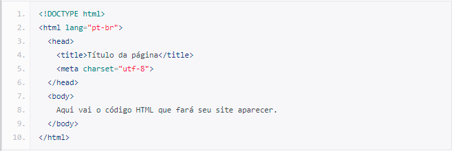

Índice
História dos computadores
Funcionavam por meio de circuitos e válvulas eletrônicas. Possuíam o uso restrito, além de serem imensos e consumirem muita energia .Um exemplo é o ENIAC (Eletronic Numerical Integrator and Computer) que consumia cerca de 200 quilowatts e possuía 19.000 válvulas.
Ainda com dimensões muito grandes, os computadores da segunda geração funcionavam por meio de transistores, os quais substituíram as válvulas que eram maiores e mais lentas. Nesse período já começam a se espalhar o uso comercial.
O que são Servers?
Grande parte da internet é baseada no modelo cliente-servidor. Nesse modelo, os dispositivos do usuário se comunicam por meio de uma rede com servidores localizados centralmente para obter os dados de que precisam, em vez de se comunicarem entre si. Dispositivos de usuários finais, como notebooks, smartphones e computadores desktop, são considerados "clientes" dos servidores, como se fossem clientes obtendo serviços de uma empresa. Os dispositivos clientes enviam solicitações de páginas web ou aplicativos aos servidores e os servidores fornecem respostas.
O modelo cliente-servidor é usado porque os servidores são normalmente mais poderosos e confiáveis do que os dispositivos dos usuários. Eles também são constantemente guardados e mantidos em ambientes controlados para garantir que estejam sempre ligados e disponíveis; embora servidores individuais possam ficar inativos, geralmente há outros servidores servindo de apoio para deles. Enquanto isso, os usuários podem ligar e desligar seus dispositivos, ou perdê-los ou quebrá-los e isso não deve afetar o serviço de internet para outros usuários.
Os servidores podem servir a vários dispositivos clientes ao mesmo tempo e cada dispositivo cliente envia solicitações a vários servidores durante o acesso e a navegação na internet.
O que são Clients?
Lado do cliente e lado do servidor são termos de desenvolvimento da web que descrevem onde o código do aplicativo é executado. Os desenvolvedores da web também se referem a essa distinção como front-end X back-end, embora lado do cliente/lado do servidor e front-end/back-end não sejam exatamente os mesmos. Em uma arquitetura sem servidor, o fornecedor sem servidor hospeda e atribui recursos a todos os processos do lado do servidor e os processos aumentam conforme aumenta o uso do aplicativo.
Como é uma estrutura básica de um HTML?
O documento HTML sempre inicia com o que chamamos de estrutura básica. Esta estrutura é quase que imutável. Sempre será dessa forma e você sempre, sempre começará seu HTML começando por esse código. Geralmente os editores como o Sublime Text já tem atalhos para iniciar os documentos HTMLs com essa estrutura, logo, você não precisa se preocupar em decorá-la, mas é bom que faça.
Veja abaixo como ela se inicia:
Código HTML inicial
É possível compreender o documento em HTML de uma maneira muito simples, através de uma divisão de blocos das tags essenciais, conforme a a seguinte estrutura:
- Definição do documento (doctype)
- Cabeça (head)
- Corpo (body)